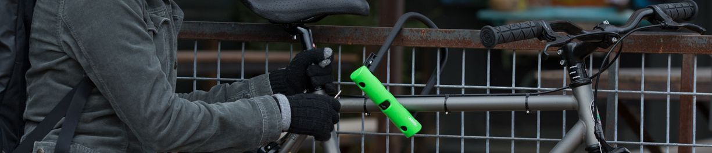

THE EVERYDAY ESCAPE YOUR LOCAL. YOUR RIDE. WATERLOO, ON.
Independently owned.Endlessly bike-minded.
RIDE YOUR
OWN WAY.
From the everyday commute to the long way home.
Good bikes. Expert hands. A shop that gets you.
A few of our favourites
MARINContinentalSHIMANOGIROPark Tool
Different roads.
Same good feeling.
There’s a bike for the way you move.
Let’s find yours.
Big adventures start small. We have kids’ bikes, too.
A CLOSER LOOK AT YOUR NEXT ADVENTUREEvery part.
Every part.
One incredible ride.
Beautifully simple to ride.
Brilliantly connected underneath.
GOOD PEOPLE. PRECISE WORK.A little care.
A little care.
A whole lot of ride.
Family-run means you deal with an owner. Experienced service means your bike gets the attention it deserves. We’ll help you understand what it needs, and why.
Let’s get it dialled ↗WBI-trained technicianShimano training
THE BEAUTY IS IN THE DETAILSGearing, made tangible
RPM
GEAR RATIO2.00 : 1
WHEEL SPEED120 rpm
MODEL SPEED15.1 km/h
An interactive gearing model. 42T chainring, selected rear sprocket, 2.1m wheel circumference. Illustrative speed excludes real-world resistance.
Back to
your best ride.
View service packages ↗Tune it.
Love it again.
Shifting that clicks. Brakes that bite. A proper tune-up makes every ride feel better.
↗The details
make the difference.
From wheel truing to drivetrain care, skilled hands keep the little things running right.
↗A fresh start.
For your favourite bike.
Give a well-loved bike some extra attention with a comprehensive overhaul.
↗A SHOP THAT RIDES WITH YOU
Better rides start
with a conversation.
Tell us where you ride, what feels good, and what doesn’t. We’ll help you find the right bike, the right upgrade, or simply the right adjustment.
THE NEXT
MOVE IS YOURS.
↗Local roads.
Open possibilities.
in Lakeshore Village.